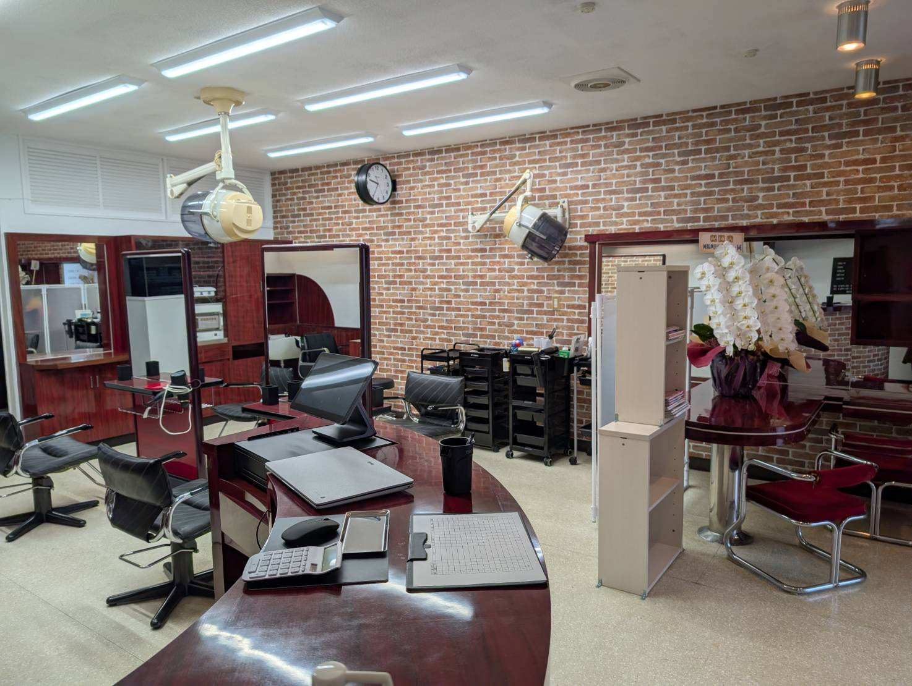
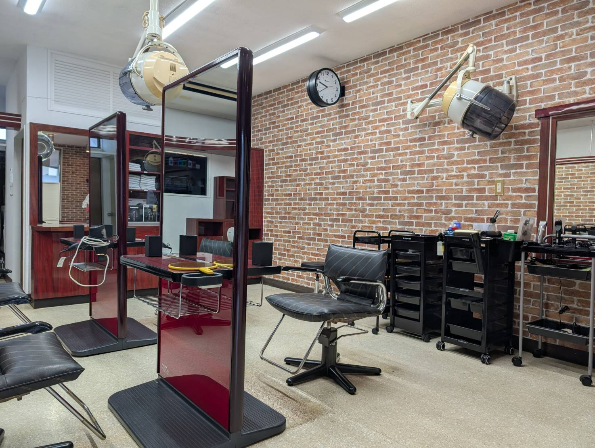
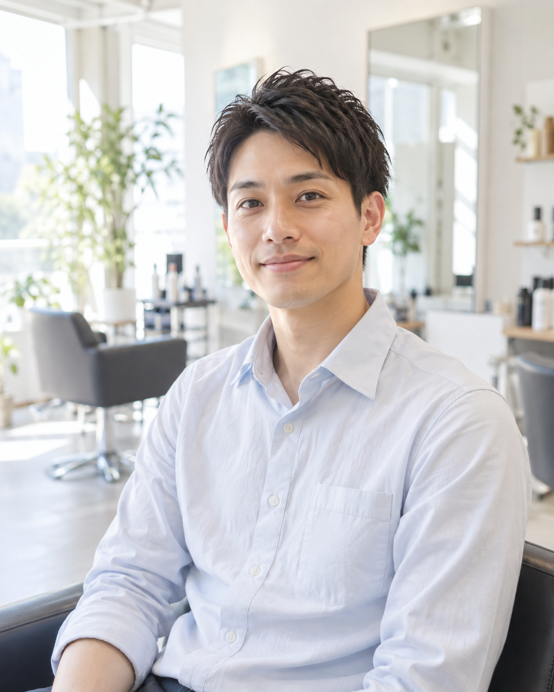
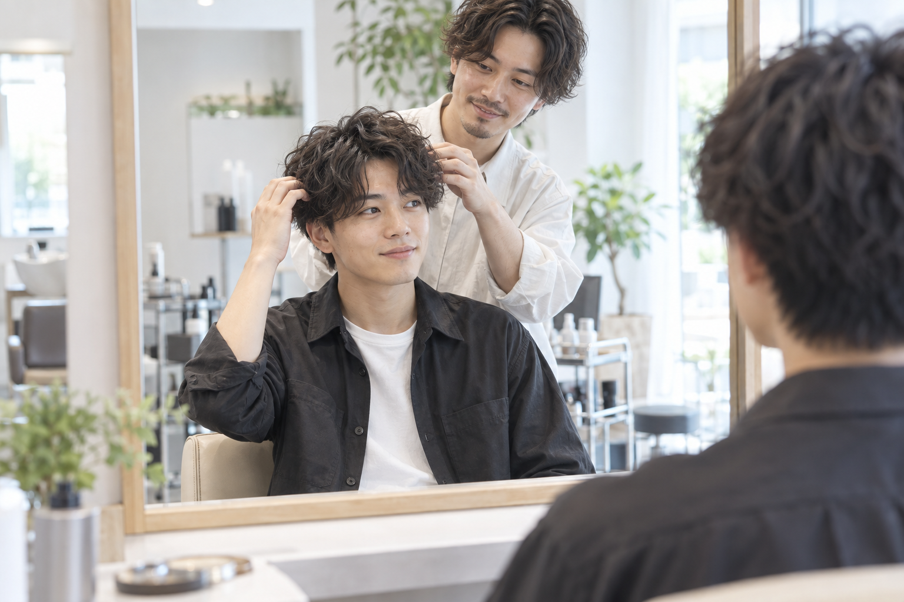
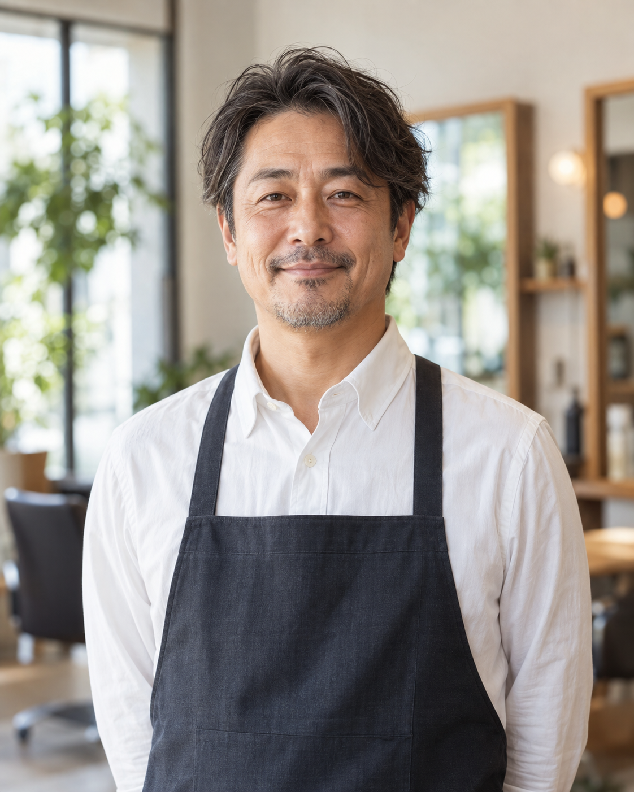

Hello,

01
白髪染めやパーマを中心に、地元の年配のお客様に長くご愛顧いただいてきました。学生さんやお仕事帰りの方にも、理容室感覚でふらっと立ち寄っていただきたいと考えています。

比企郡鳩山町松ヶ丘のプチプラザE店舗内。駐車場を完備しておりますので、お車でのご来店も安心です。バスや駅からは離れたエリアですが、その分ゆったりとお過ごしいただけます。

ご予約なしでもご来店いただけます。「今日思い立ったから」という方も、お仕事帰りにふらっとお立ち寄りいただく方も、どなたでも気兼ねなくお越しください。

白髪染め・パーマ・丸刈り（バリカン）を中心に、年齢を問わず安心してお任せいただける施術を心がけています。男女・年代を問わず、どなたでも安心してお任せいただけるサロンでありたいと思っています。
02

HAIR SALON 02 代表
神奈川・静岡・埼玉で美容師として30年、技術を積んでまいりました。得意な技術はショートカット。男性やご年配のお客様に多くご支持いただいています。特別な機材は使わず、一人ひとりに合わせた施術を大切にしています。
04
予約なしでもご来店いただけます。お気軽にお電話ください。